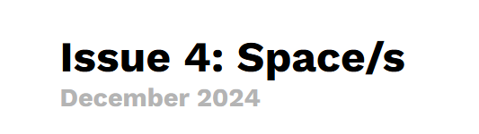
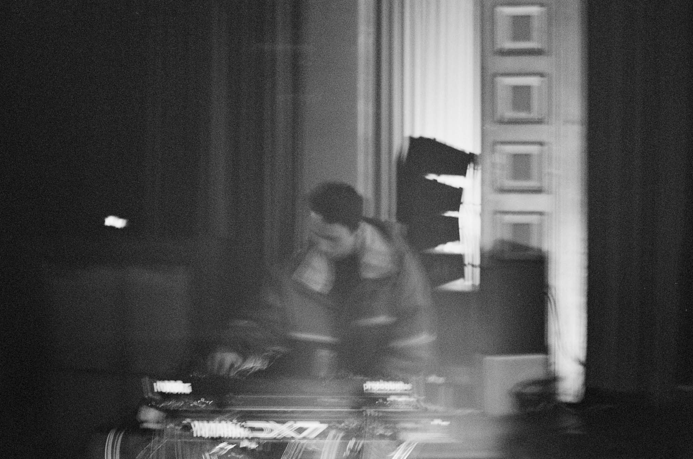
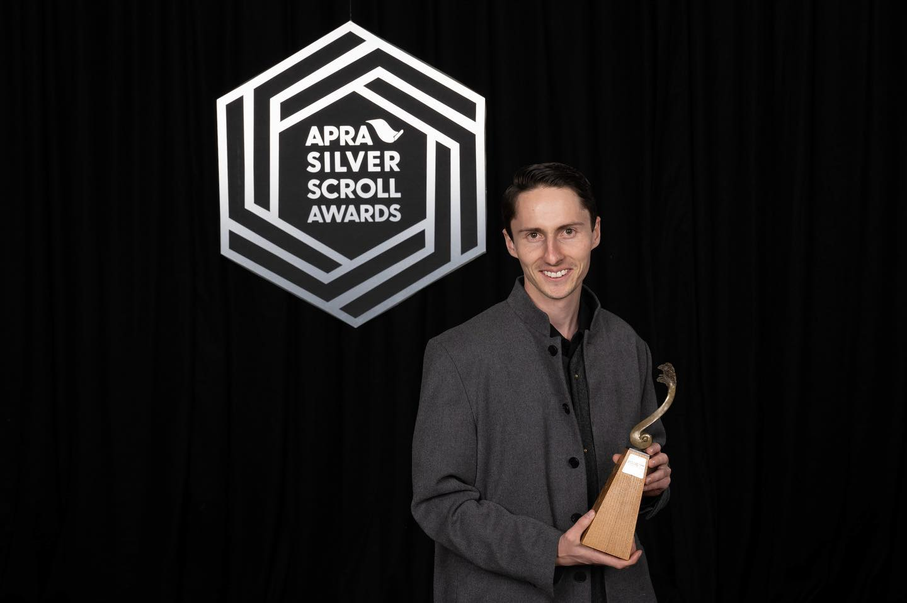
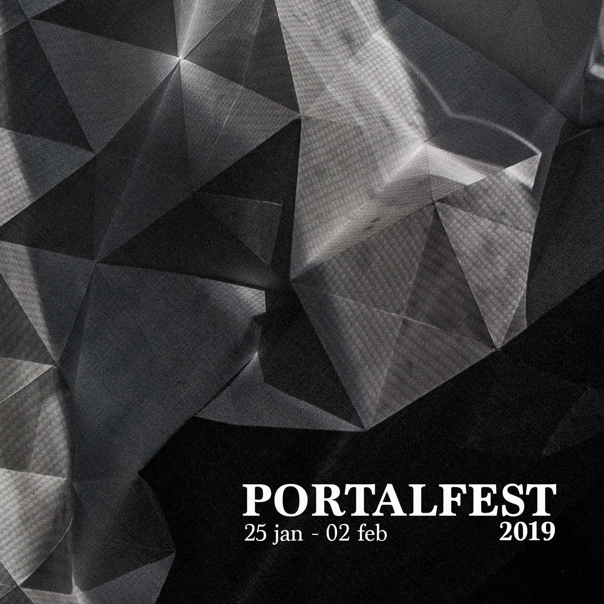

Dust and Blur
December 2024Spaces figure strongly when you're first learning to read music. There are the spaces between the lines on the stave, the FACE and ACEG in the treble and bass respectively. There are vertical pitch spaces—intervals—horizontal spaces—rhythms, silence, and rests. Breve in. Breve out.
Space and spaces figure strongly throughout musical thought and experience. And music, sound, and performance are profoundly spatial: they emerge, exist, and echo within physical, emotional, and conceptual spaces, where listeners, participants, sound waves, and movement (and so much more) collide. Spaces give context and form, grounding the ephemeral in the tangible.
Reuben Jelleyman analyses the profound nature of music, its relationship to space and time, and how it is shaped by the interplay of acoustics, perception, and the human imagination.

BLADE RUNNER
prescreening performance at The Hollywood Avondale
August 2024Composer Reuben Jelleyman recreates the soundscape of reverb-drenched Los Angeles in his musical prelude to Blade Runner. This tribute to Vangelis's era-defining 80's masterpiece will bend and remix classic themes from the film with a modern take, performed live on vintage and modern synthesisers. This special performance will set the scene for a Blade Runner experience never to forget.
Director Ridley Scott's acknowledged masterpiece, BLADE RUNNER is also one of the most influential films of the past 30 years, a dazzling fusion of retro-noir and future paranoia, set in a decaying, rain-drenched Los Angeles dominated by Mayan pyramids of unimaginable wealth.

PORTAL: ANNA KOCH
Off Centre and Auckland Arts Festival performances
April 2024Austrian clarinettist Anna Koch joins three leading Aotearoa composers for this special performance woven through the gallery spaces of Te Uru.
Austrian new-music and improvisation specialist Anna Koch opens this latest PORTAL, an innovative contemporary music series created and produced by composer Reuben Jelleyman.
Part of her solo world tour, Koch's collaboration with taonga puoro practitioner Ariana Tikao, alongside the performance of new solo works by Dylan Lardelli and Jelleyman, will showcase her virtuosic command of bass clarinet. Taking us beyond the concert hall, PORTAL promises not only a journey through the physical passageways of Te Uru, but the discovery of a unique musical experience.
As part of this unique musical experience the audience are encouraged to move around during the performance but seating is also provided.

October 2022SOUNZ Centre for New Zealand Music is delighted to announce that Auckland based composer Reuben Jelleyman has won the 2022 SOUNZ Contemporary Award | Te Tohu Auaha with Catalogue.
The Hon Carmel Sepuloni, Minister for Arts, Culture and Heritage presented the Award at the 2022 APRA Silver Scroll Awards held at the Spark Arena on Tuesday 18 October. The SOUNZ Contemporary Award | Te Tohu Auaha, now in its 25th year, recognises New Zealand compositions demonstrating outstanding levels of creativity and inspiration and has been presented in collaboration with APRA AMCOS NZ since 1998.
This was Reuben's third nomination for the SOUNZ Contemporary Award | Te Tohu Auaha.

January 2019PORTALFEST is a festival celebrating the music of the new generation of contemporary music practitioners. 2019's festival features composers and performers based in Switzerland, Germany, Australia, and New Zealand in a two night weekend festival (Friday and Saturday) in the bustling city of Wellington, NZ. The festival's focus is to utilise the myriad of art gallery spaces all in close proximity in the middle of Wellington city to create two evenings of new-music adventures in the city.